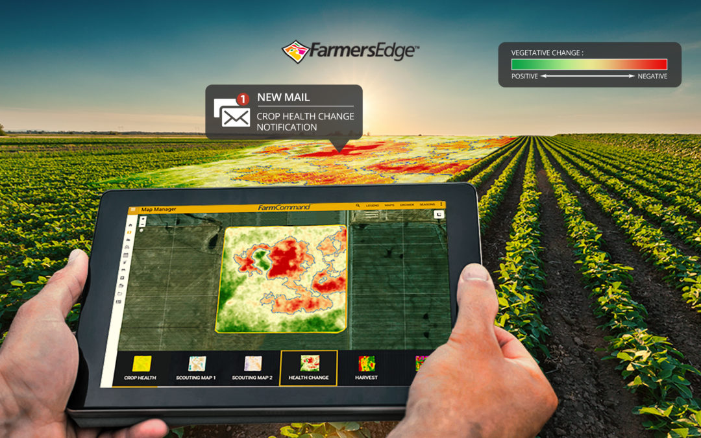

CDI Consulting Releases the Industry’s First Automatic Crop Health Change Detection Tool Highlighting the ROI of Daily Satellite Imagery
WINNIPEG, Manitoba – October 24, 2018 — CDI Consulting released a ground-breaking, digital tool that automatically scans satellite imagery and notifies growers of changes in their fields. Building upon the release of daily satellite imagery in 2017 and over 70 new features and tools launched this year, new Health Change Maps and Notifications function as an integrated toolset designed to accelerate the speed of decision-making when crop issues emerge. This unique precision digital tool pinpoints potential problems, including pests, disease, nutrient deficiencies, inclement weather, missed application, equipment malfunction, drainage issues, and more. This innovative technology enhances the value of daily imagery by helping growers save time, identify issues quicker, and react to crop stress before yield is impacted.
The City of Toronto Engineering and Public Works Department tasked CDI to use our UAV technology to capture high definition video of traffic flow in a newly constructed “roundabout” during peak morning and afternoon time periods. CDI retains all necessary Transport Canada permissions for drone operation. Our UAV pilot captured over 1.5 hours of video over 9 total flights while ground support staff observed for possible safety concerns and directed foot traffic away from the flight path. Output files were provided to the City of Toronto for the purpose of reviewing traffic patterns and adjusting for possible safety concerns within the roundabout.
Recently, we have been called upon to create a Leaf Area Index report for all of Canada. This indepth look at the leaf area index was a great success.